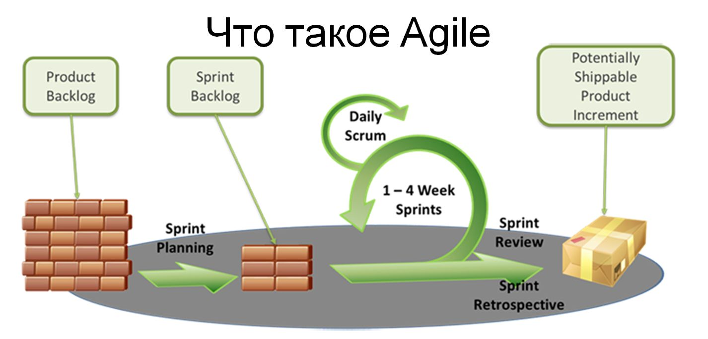

Именно в 1970 году американский ученый-компьютерщик Уинстон Ройс составил документ, называвшийся «Управление развитием крупных программных систем». В нем он приводил критику последовательной разработки, указывая на то, что разработка программного обеспечения не должна походить на работу сборочной линии (как, например, делается в автомобильном производстве), где новые детали по очереди добавляются в последовательные фазы.
Agile означает гибкий, динамичный, то есть мы можем сказать, что тот менеджмент, который следуют методологии Agile должен быть гибким и динамичным.

меняет модель мышления в самой организации, так как в рамках компании создается некая рабочая группа, в задачи которой входит поиск интересных и неординарных решений, которые можно внедрить на рынок.
Вместо того чтобы ждать, пока будут поочередно завершены все этапы (фазы), Ройс предложил применять фазовый подход. Суть его в том, что изначально собираются все требования, необходимые для проекта, после чего завершается вся архитектура, создается дизайн, записывается код и т.д.
Если упростить формулировки, чтобы «выкристаллизовать» соображения, которыми руководствуются все, кто работает по Agile, получится что-то вроде этого:
Самое главное люди, а не вещи
Документация (которую еще и никто не читает) не должна никому мешать работать
Сотрудничайте, а не перечитывайте контракт
Живите, дышите, меняйтесь — так быстро, насколько это возможно